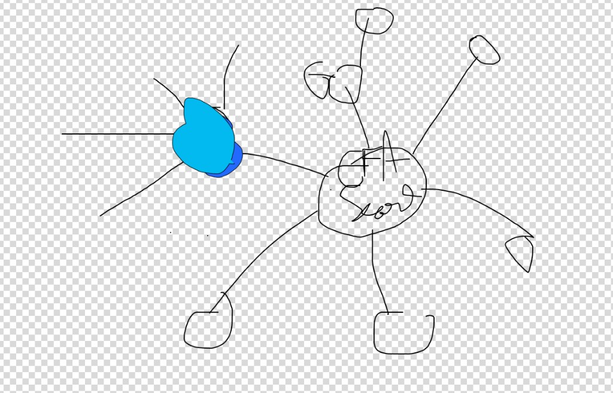

One node per CFA concept in an organic hierarchy: CFA at the center (biggest), the test sections orbiting it, each section’s subsections beyond. Node size = exam weight; node fill = your mastery, light gray → turquoise. Minimalist at rest; detail appears on interaction.
Big nodes (CFA + the 10 sections) are labeled. Each node shows one color on the light-gray → turquoise scale — more mastered, more turquoise. No numbers, no clutter.
On hover a node resolves into an exact fill gauge — turquoise up to your %, the rest light gray — with a chip showing name + %. Subsection names surface here too.
Clicking opens a casual, user-friendly explanation of how that fill was earned and the single fastest way to raise it — from a batched AI call.

| Ring | What it is | Size / label |
|---|---|---|
| Center | CFA — overall exam readiness | Biggest · always labeled |
| Orbit 1 | The 10 test sections (Ethics, Quant, Economics, FRA, Corporate Issuers, Equity, Fixed Income, Derivatives, Alt. Investments, Portfolio Mgmt) | Sized by exam weight · always labeled |
| Orbit 2 | Subsections of each section (e.g. Equity → FCFE/FCFF, Residual Income) | Smaller · label on hover |
Node size ∝ exam weight — the 10–15% sections (Ethics, FRA, Equity, Fixed Income, Portfolio) render larger than the 5–10% ones. The layout is organic, not a rigid wheel, but fixed & stable (server-precomputed) so it becomes a mental map you navigate by memory.
One batched call sends the visible nodes + your performance data and drafts every node’s explanation at once.
The explanation is already there → shows instantly. No spinner, no per-tap round-trip.
The templated ~80% is the whole explanation; the map, fills, and next-drill still work with AI switched off.
The map is one feature, one behavior: same hierarchy, same weight-sizing, same light-gray→turquoise fill, same hover (name + %) and tap (batched-AI explanation) on both platforms. The phone adds pinch-to-zoom + pan for the outer subsection orbit; the desktop uses hover + scroll-zoom.